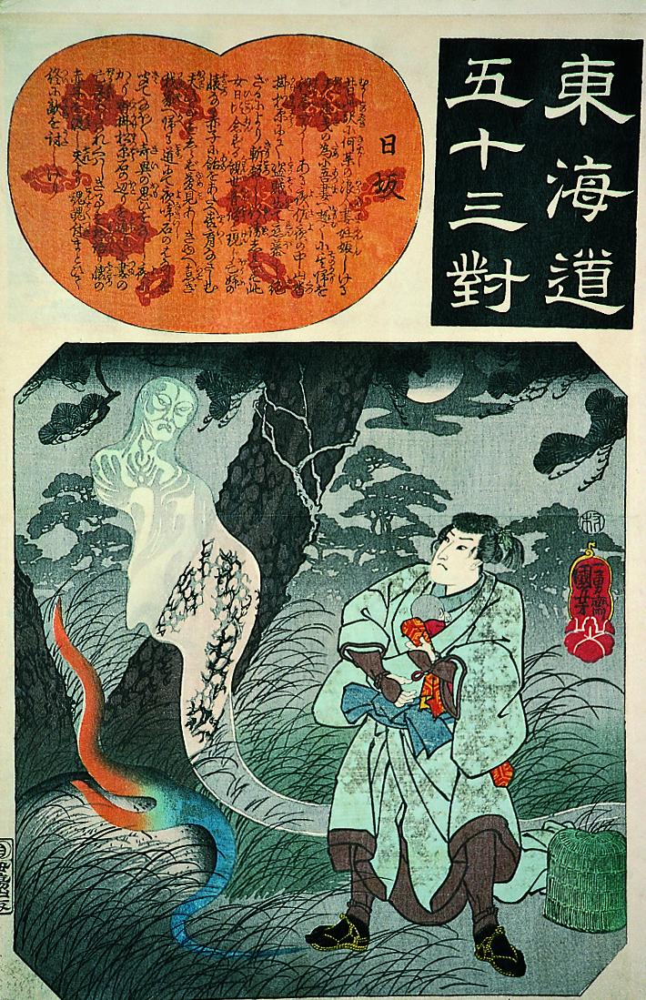

旅人の前に出現した幽霊。松の根元にある石からでた青と赤の怪火と共に、空中でゆらいでいる。身体は白く透き通っていて、背景の松がみえる。身を捩りながら、苦悶の表情を浮かべているようにみえる。
著作者：歌川国芳／出典：親書誌：A5_pushkin_0010：東海道五十三対 日坂；トウカイドウゴジュウサンツイヒサカ／日付：2011／資源識別子：A5_pushkin_0010_0001_0000
Copyright (c)2010- International Research Center for Japanese Studies, Kyoto, Japan. All rights reserved.